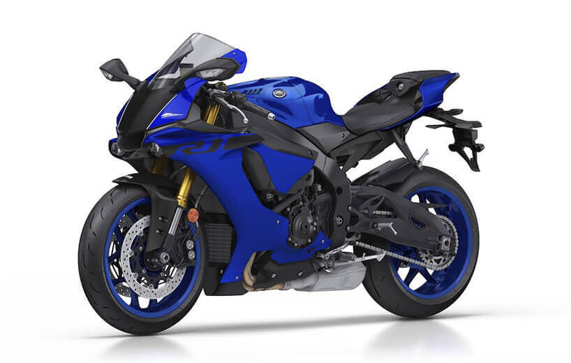

YAMAHA YZF-R1
Ahora con un aspecto todavía más de carreras. un motor de cuatro cilindros y 200 CV, con diseño de cigüeñal crossplane, mucha electrónica que se controla a través del sistema IMU, que cuenta con un sensor “G” que trabaja en aceleración hacia delante, hacia los lados y en sentido vertical, y otro sensor “Gyro” que ayuda en inclinaciones laterales, longitudinales y transversales.